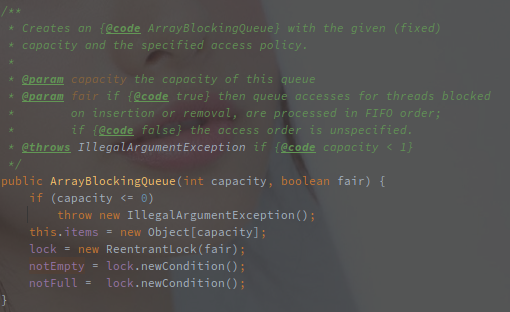
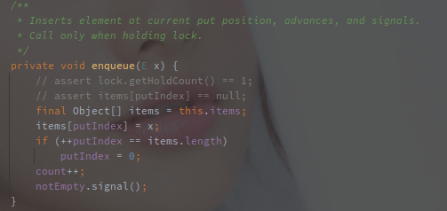
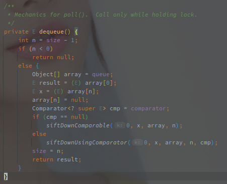
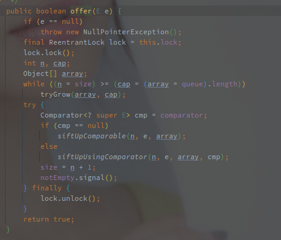
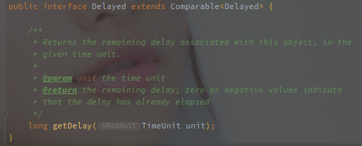
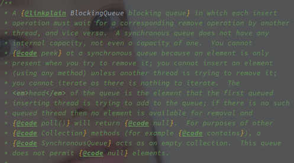

BlockingQueue（阻塞队列）
[TOC]
概述
BlockingQueue 阻塞队列是 JUC 中新增的集合类，是特殊的 Queue，额外支持在集合为空时获取阻塞，在集合满时添加阻塞的功能。
BlockingQueue 不接收任何的 null 值。
阻塞队列的基本实现就是采用 JUC 中提供的 ReentrantLock 重入锁和 Condition 竞态条件。
使用 ReentrantLock 保证线程安全，使用 Condition 在特定条件下阻塞或唤醒线程。
阻塞队列提供了以下几种方法套件:
| 结果 | 插入 | 移除 | 获取 |
|---|---|---|---|
| 异常 | add | remove | element |
| true/false or null | offer | poll | peek |
| 阻塞 | put | take | |
| 等待 | offer(time) | poll(time) |
使用 ReentratLock 而非 synchronized 的原因：
await/signal 和 wait/notify 的对比:
- 前者基于 JUC 的 AQS 机制实现，而后者基于 JVM 的 Monitor 机制实现。
- await/signal 体系一次上锁可以对应多个 Condition，而 wait/notify，一次的上锁只支持一个等待队列
单锁的多条件队列可以提供更高的并发安全性。
以下为几种基本实现：
ArrayBlockingQueue
数组实现的有界阻塞队列，新增和获取时都有可能被阻塞，ArrayBlockingQueue 中采用单个重入锁，生成两个 Condition。

ArrayBlockingQueue 的入队和出队基本都使用 enqueue 和 dequeue 方法来实现。
在 put 方法上锁，然后线程安全的执行 enqueue 方法，以下显示 put 方法的源码:

上锁后开始判断容量，如果容量已满则使用 notFull 阻塞当前线程，等待唤醒，唤醒之后进入 enqueue 方法。

添加元素到原数组，然后通过 notEmpty 唤醒因为集合为空被阻塞的线程。
ArrayBlockingQueue 没有扩容的说法，容量从初始化之后就是固定的。
LinkedBlockingQueue
LinkedBlockingQueue 就是链表形式的阻塞队列，以下为链表的 Node 节点:

节点数据非常简单，线程的阻塞也是通过 Condition 实现的。
以下是实现阻塞的相关变量:

takeLock 和 putLock 是在新增和获取的时候的锁对象，而对应的 notEmpty 和 notFull 就是空和满两种状态的条件。
这里可以看到，LinkedBlockingQueue 使用了两个 ReentratLock 来创建两个 Condition。
对比于 ArrayBlockingQueue 的单个 ReentrantLock，读写分离的锁会具有更高的并发性能。

在 take() 方法中通过 takeLock 上锁，保证添加过程的线程安全，如果此时队列为空则使用 notEmpty 阻塞当前线程。
唤醒后继续执行添加逻辑，当资源有省的时候调用 notEmpty#signal，并调用 notFull 唤醒因为队列已满被阻塞的线程。
以下是 put 方法的源码:

put 方法使用 putLock 上锁，使用 notFull 阻塞添加线程，并且使用 notEmpty 唤醒阻塞线程。
PriorityBlockingQueue
优先级阻塞队列（PriorityBlockingQueue），该队列属于无界队列，所以不存在因为插入导致的线程阻塞。
内部使用堆来实现整体的有序性，并且会自动扩容。
以下是 PriorityBlockingQueue 的获取元素的过程：

如果 dequeue 获取为空，则调用 notEmpty#await 阻塞调用进程。
dequeue 方法的逻辑和正常的堆一样，从堆顶取元素，堆尾元素置顶并下沉（siftDown）。
可以参考 PriorityQueue 的实现：PriorityQueue 的实现
另外还有添加元素的过程：

添加元素的逻辑和堆一致，元素添加到堆尾并尝试上浮（siftUp），并且在添加成功之后唤醒 notEmpty 的条件阻塞。
并且还可以看到扩容的判断，queue（Object 的数组）已经满了之后才会进行扩容。
以下为扩容的逻辑：
// PriorityBlockingQueue#tryGrow
// oldCap 为旧容量，array 为旧数据
private void tryGrow(Object[] array, int oldCap) {
// 取消上锁，因为扩容准备阶段不需要阻塞
lock.unlock(); // must release and then re-acquire main lock
Object[] newArray = null;
// allocationSpinLock 就是扩容的乐观锁（CAS 替换）
if (allocationSpinLock == 0 && UNSAFE.compareAndSwapInt(this, allocationSpinLockOffset, 0, 1)) {
try {
// 扩容的效率
int newCap = oldCap + ((oldCap < 64) ?
(oldCap + 2) : // grow faster if small
(oldCap >> 1));
if (newCap - MAX_ARRAY_SIZE > 0) { // possible overflow
int minCap = oldCap + 1;
if (minCap < 0 || minCap > MAX_ARRAY_SIZE)
throw new OutOfMemoryError();
newCap = MAX_ARRAY_SIZE;
}
if (newCap > oldCap && queue == array)
// 创建新数组
newArray = new Object[newCap];
} finally {
allocationSpinLock = 0;
}
}
if (newArray == null) // back off if another thread is allocating
Thread.yield();
//
lock.lock();
if (newArray != null && queue == array) {
queue = newArray;
// 拷贝数组
System.arraycopy(array, 0, newArray, 0, oldCap);
}
}
队列的扩容分为两种：
- 小容量时（cap < 64）直接 old * 2 + 2
- 大容量时（cap >= 64）old * 1.5
整体来说，小容量的扩容速度更快。
扩容的整体流程就是：
- 创建新数组
- 从旧数组拷贝数据到新数组
准备期间（创建新数组期间）方法会先解锁（真的细），保证期间可以获取元素，同时采用另外的 CAS 锁来保证准备阶段的并发安全。
DelayQueue
延时队列（DelayQueue），该队列也属于无界队列，内部直接使用了 PriorityQueue 保存数据。
DelayQueue 保存的元素必须要实现 Delayed 接口。

Delayed 提供的是任务的比较以及任务剩余等待时间的获取（getDelay）。
getDelay 方法获取的是任务距离到期的时间。
在来看延迟的逻辑，以下是队列的获取流程：
// DelayQueue#take
public E take() throws InterruptedException {
final ReentrantLock lock = this.lock;
// 上锁
lock.lockInterruptibly();
try {
for (;;) {
E first = q.peek();
// 如果队列为空，则直接阻塞
if (first == null)
available.await();
else {
long delay = first.getDelay(NANOSECONDS);
// 任务到期之后弹出并返回
if (delay <= 0)
return q.poll();
// 任务并没有到期
first = null; // don't retain ref while waiting
// 已经有任务在等待，则直接阻塞
if (leader != null)
available.await();
else {
// 没有任务在阻塞的时候，直接将自己作为 leader
Thread thisThread = Thread.currentThread();
leader = thisThread;
try {
// 等待一段时间唤醒
available.awaitNanos(delay);
} finally {
if (leader == thisThread)
leader = null;
}
}
}
}
} finally {
// 当前线程已经获取到任务和之后，如果 leader 为空则唤醒一个线程尝试获取首个任务
if (leader == null && q.peek() != null)
available.signal();
lock.unlock();
}
}
在获取任务的时候，队列如果没有到期的任务则会阻塞当前的线程。
leader 变量用于减少任务的竞争和不必要的唤醒。
DelayQueue 需要在任务到期的时候唤醒一个线程去获取，leader 线程就是被选中的那个。
所有的等待线程除了 leader 都是无限期等待的，只有 leader 是定时阻塞，阻塞到任务到期，然后获取任务，在 leader 获取任务成功的同时，如果任务不为空则会唤醒下一个等待的线程。
以下是添加元素的方法，其中可以看到 leader 的作用：

添加任务的时候，如果当前的任务被放在堆顶，则会置空 leader 变量，因为 leader 等待的任务已经不是首个到期任务了。
然后唤醒一个线程去成为新的 leader 并阻塞等待。
旧的 leader 到期后发现任务没到期并且 leader 不为空则会变为无限阻塞。
SynchronousQueue
同步队列（SynchronousQueue）是一个相对特殊的队列，以下是它的类注释：

同步队列的插入动作必须等带对应的删除操作，反之亦然（and vice versa）。
同步队列甚至没有任何内部的容量，无法通过常规的 peek() 等方法查看元素，只有在尝试删除它的时候才能看到。
同步队列无法迭代（iterate）遍历，也没有什么好迭代的。
队列不允许 null 元素。